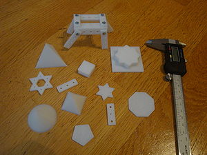

Contenido
[ocultar]Ficha del curso
- Título: Taller de introducción a Openscad
- Duración: 1 hora
- Nivel: Básico
- Ámbito: OSHWDEM-2012, Coruña
- Fecha: 17/Nov/2012
- Lugar: Centro cultural Ágora, Coruña
- Asistentes:: 30
- Profesor:Diego Álvarez, Diego Prado y Juan Gonzalez-Gomez
- Descripción:
- Mini-taller de introducción a OpenScad, para enseñar las ideas básicas: figuras primitivas: cubos y cilindros, transformaciones básicas: rotación y traslación, operaciones booleanas (uniones y diferencias), módulos y repeticiones con bucles for
NOTA
(Obijuan) El taller lo bauticé allí como: "Taller apolo-13 de Openscad". Todo lo que pudo salir mal ocurrió. 1) Me dejé los apuntes que tenía preparados en el hotel 2) El taller fue por la tarde y ... me quedé sin voz 3) No conseguí conectar el portátil al proyector por lo que no pude enseñar como se hace proceso entero desde que se diseña un cubo hasta que se imprime. 4) El taller sólo fue de media hora por todos estos problemas :-(
Pido disculpas a todos los asistentes.
Ejemplos
| 2012-11-13-oshwdem-openscad.zip | Ejemplos preparados para el taller |
Fotos
|  Ejemplos mostrados en el taller, impresos en ABS blanco |

Autores
- Juan Gonzalez-Gomez
- Diego Álvarez
- Diego Prado
Licencia
| This work is licensed under a Creative Commons Attribution-ShareAlike License. |

Enlaces
- Página de Openscad: OpenScad
- Micro-video-tutoriales de openscad
Agradecimientos
- A todo el equipo de la OSHWDEM por invitarme a participar. ¡Muchas gracias!
- Agradecimientos especiales a Diego Prado y Diego Álvarez por la gestión del taller, su ayuda en la preparación e impartir el segundo grupo. ¡Muchas gracias!
- Gracias especiales a uno de los asistentes al taller que muy amablemente me prestó su portátil con Linux para poder darlo. No tengo tu nombre, si lees esto dímelo :-) ¡Muchísimas gracias!
Noticias
- 22/Nov/2012: Publicado el curso
|
|
Proyecto Clone wars: Construye tu impresora 3D opensource! |
|
|
Obijuan Academy, Tu academia rebelde! ;-) |